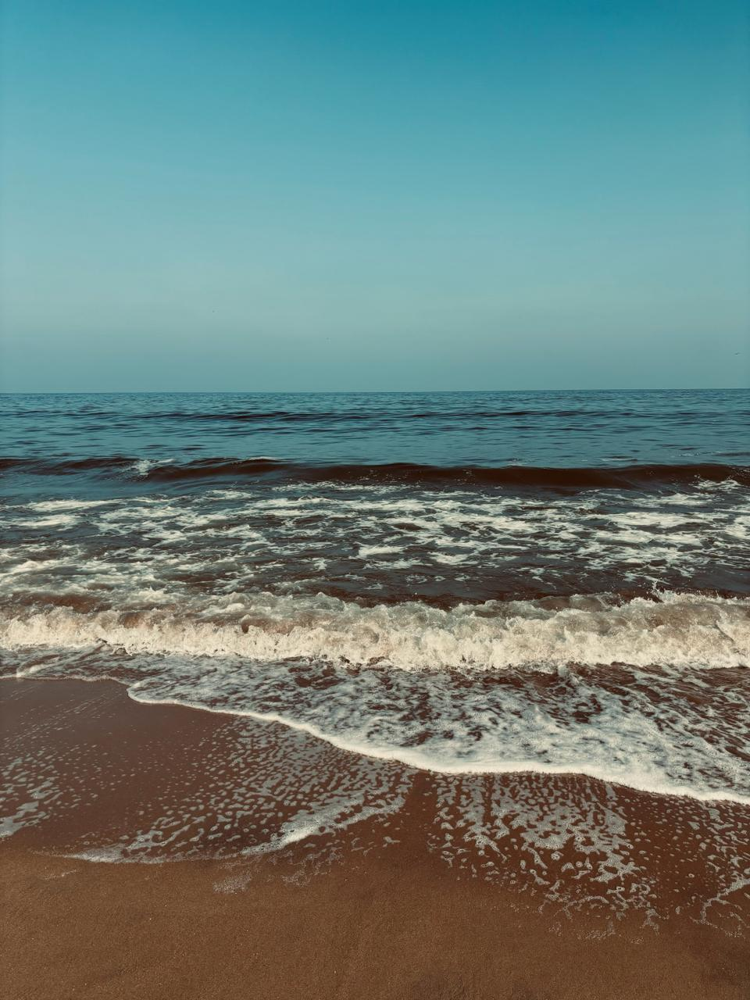

~WELCOME TO MY HOBBIES/INTERESTS PAGE!!~
This is my hobbies/interests page! I have many hobbies such as photography, writing blogs, spending time in nature, etc. I write blogs on Medium, and so far I've written 2 blogs on that platform.
I also love taking pictures...Here are some of my favourite pics!!
